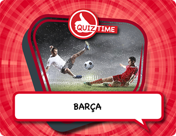
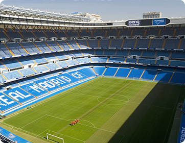
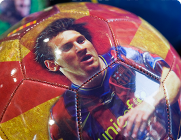

<!-- i-C-a -->
<div data-role="page" id="sub-food-football-and-fiesta-food-football-and-fiesta-real-versus-barca">
  <script src="js/hammer.js"></script>
  <script src="js/jquery.hammer.js"></script>
  <script src="js/slidebar_food_football_and_fiesta.js"></script>
  <link rel="stylesheet" href="css/style_food_football_and_fiesta.css" />
  <div class="menuhousing"></div>
  <div class="homebtnholder"><div class="homebtnFoodFootballFiesta"></div></div>
  <div class="mpbtnholder"><div class="mpbtnFoodFootballFiesta"></div></div>
  <div class="cpbtnholder"><div class="cpbtnFoodFootballFiesta"></div></div>
  <div class="infobtnholder"><div class="infobtnFoodFootballFiesta"></div></div>
  <div class="credsbtnholder"><div class="credsbtnFoodFootballFiesta"></div></div>
  <div class="menubtnholder"><div class="menubtnFoodFootballFiesta"></div></div>
  <!-- <div class="bptitleholder" style="padding-top:14px;"><h1>Real versus Barca</h1></div> -->
  <div id="spacechar">&nbsp;
    <div data-role="content" class="kidzcontent">
      <div class="v-spacer"></div>
      <div class="sidebarleft-half">
	  
		<div id="f1_container" style="visibility:hidden;position:absolute;left:100px;top:270px;">
          <div id="f1_card">
            <div class="front face">
              
            </div>
            <div id="backofcard" class="back face center" style="background:url(css/images/9-12/Language_and_Culture/Food_Football_And_Fiesta/Food_Football_And_Fiesta/Real_Versus_Barca/Bara_Reverse.png) no-repeat;">
              <div class="returncard" style="position:absolute;left: 140px;top: 0px;width: 98px;height: 54px;"></div>
              <div id="trueans" style="position:absolute;left: 171px;top: 103px;width: 157px;height: 18px;"></div>
              <div class="falseans" style="position:absolute;left: 171px;top: 126px;width: 157px;height: 22px;"></div>
			  <div class="falseans" style="position:absolute;left: 171px;top: 150px;width: 157px;height: 22px;"></div>
			  <div class="falseans" style="position:absolute;left: 171px;top: 175px;width: 157px;height: 22px;"></div>
			  <div id="Light_Box_Image" style="position:absolute;left: 40px;top: 105px;width: 118px;height: 138px;"></div>
			</div>
          </div><!--/f1+card-->
        </div><!--/f1_container-->
		<a id="quiz_lightbox" style="visibility:hidden;" href="JavaScript:html5Lightbox.showLightbox(0, 'css/images/9-12/Language_and_Culture/Food_Football_And_Fiesta/Food_Football_And_Fiesta/Real_Versus_Barca/Bara_Hi_Res.png', '');">click here</a>
		<a id="img1" style="visibility:hidden;" href="JavaScript:html5Lightbox.showLightbox(0, 'css/images/9-12/Language_and_Culture/Food_Football_And_Fiesta/Food_Football_And_Fiesta/Real_Versus_Barca/Santiago_Bernabeu_Stadium_Hi_Res.jpg', 'Santiago Bernabeu Stadium is a football stadium which seats nearly 90,000 fans in Madrid, Spain.  Courtesy of Getty Images.');">click here</a>
        <a id="img2" style="visibility:hidden;" href="JavaScript:html5Lightbox.showLightbox(0, 'css/images/9-12/Language_and_Culture/Food_Football_And_Fiesta/Food_Football_And_Fiesta/Real_Versus_Barca/Soccer_Ball_With_Superstars_Image_Hi_Res.jpg', 'It is common to find football stars memorabilia and image throughout Spain.  Courtesy of Getty Images.');">click here</a>
        <a id="img3" style="visibility:hidden;" href="JavaScript:html5Lightbox.showLightbox(0, 'css/images/9-12/Language_and_Culture/Food_Football_And_Fiesta/Food_Football_And_Fiesta/Real_Versus_Barca/Game_On_Hi_Res.jpg', 'Spanish soccer players take to the pitch');">click here</a>        
		<div id="zoomwrapper">
          <div id="pol1" class="pPiece" style="left:100px;top:270px;">
             
          </div>
          <div id="pol2" class="pPiece" style="left:75px;top:290px;">
             
          </div>
          <div id="pol3" class="pPiece" style="left:75px;top:290px;">
             
          </div>
          <div id="pol4" class="pPiece" style="left:75px;top:290px;">
             
          </div>		  
        </div><!--/zoomwrapper-->
      </div>
      
      <div class="bpcontentFoodFootballFiesta-RealVersusBarca">
      <!--  <p>The motto of Barcelona Football (or soccer) club, Bara for short, is "More than a club".  And it certainly is: it is a way to show allegiance to Catalonia.  These days, their away kit is based on the Catalan flag, and when years ago Spain was a dictatorship, and the Catalan language was banned, the stadium was one of the few places where you could speak Catalan.</p>

		<p>Membership is so important that there is a long waiting list and parents sign up their newborn babies!  Bara is a perfect example of how a club can be used to express identity, but it is not the only one.  For example, to play in Athletic de Bilbao you must be Basque; and if you are well-off, you are more likely to follow Real Madrid and not Atltico de Madrid.</p> -->
      </div>
       
      <div class="botlogoholder"><a href="home.html" class="homelinkbh"></a></div>
    </div> <!-- end content -->  
  </div><!--/spacechar-->        
  
    <div class="micbtnholder"><div class="micbtnFoodFootballFiesta" id="playstopRealVersusBarca"></div></div>
    <div class="bFoodFootballFiesta"><div class="rwFoodFootballFiesta" id="RealVersusBarcaaudiobbtn"></div></div>
    <div class="plFoodFootballFiesta"><div class="plpsFoodFootballFiesta" id="RealVersusBarcaaudioplbtn"></div></div>
    <div class="fFoodFootballFiesta"><div class="fwFoodFootballFiesta" id="RealVersusBarcaaudiofbtn"></div></div>
    <div id="actualaudio-RealVersusBarca" style="visibility:hidden;"></div>
  <!-- </div> -->
  
  <script>
  // sound setup is in home.html and index.js
    sound = new Audio(); // 'sound' is now an audio object
 
	var playing;
    var paused;
    (function() {
      playing = false;
      paused = true;
      $('div#pol1').css("z-index", 3);
      $('div#pol2').css("z-index", 2);
      $('div#pol3').css("z-index", 1);
      $('div#pol1 > img').css("-webkit-transform", "rotate(0deg)");
      $('#watchLavaFlowholder').css({"visibility":"hidden", "z-index":-10});		
      $('div#pol2 > img').css("-webkit-transform", "rotate(5deg)");
      $('div#pol3 > img').css("-webkit-transform", "rotate(-3deg)");
      $('#watchMtTungurahuaholder').css({"visibility":"hidden", "z-index":-10});		
      $('div#pol4 > img').css("-webkit-transform", "rotate(-3deg)");
      if(sound.canPlayType('audio/mpeg')) {
        $('#actualaudio-RealVersusBarca').html('<audio id="RealVersusBarcaaudio" controls preload onpause="playsFoodFootballFiesta()" onplay="pauseFoodFootballFiesta()"><source src="audio/Food_Football_And_Fiesta/Real_Versus_Barca.mp3" type="audio/mpeg"></audio>');
      } 
    
      $("#sub-food-football-and-fiesta-food-football-and-fiesta-real-versus-barca").swipe( { swipeRight:goBack, allowPageScroll:"auto"} );
    })();
    
    $('.homelinkbh').on('tap', function() { bgsoundFoodFootballFiesta.pause(); bgsoundFoodFootballFiesta.currentTime = 0; mainaudiobg.play(); });

	
	$('.falseans').on('tap', function() {
      alert("Wrong answer");
    });
    $('#trueans').on('tap', function() {
      alert("Correct answer");
    });
	
	$(".returncard").on('tap', function() {
      $('#f1_card').css({"-webkit-transform": "rotateY(0deg)"});
      $('#f1_card').css({"-moz-transform": "rotateY(0deg)"});
      $('#f1_card').css({"-o-transform": "rotateY(0deg)"});
      $('#f1_card').css({"transform": "rotateY(0deg)"});
      setTimeout(function() {
        $("#pol1").css({"visibility":"visible", "z-index":4});
        $('#f1_container').css({"visibility":"hidden", "z-index":0});
      }, 1000);
    });
    
    $("#pol1").on('tap', function() {
      $('#f1_container').css({"visibility":"visible", "z-index":10});
      $(this).css({"visibility":"hidden"});
      $('#f1_card').css({"-webkit-transform": "rotateY(180deg)"});
      $('#f1_card').css({"-moz-transform": "rotateY(180deg)"});
      $('#f1_card').css({"-o-transform": "rotateY(180deg)"});
      $('#f1_card').css({"transform": "rotateY(180deg)"});
    });
    
    $("#Light_Box_Image").on('tap', function() {
      $('#quiz_lightbox')[0].click();
    });

    $("#pol2").on('tap', function() {
      $('#img1')[0].click();
    });
    $("#pol3").on('tap', function() {
      $('#img2')[0].click();
    }); 
	$("#pol4").on('tap', function() {
		$('#img3')[0].click();
	}); 
    function goBack() {
      $.mobile.changePage("sub-food-football-and-fiesta-food-football-and-fiesta.html", {transition: "slide", reverse: true });
    }
    
    function playsFoodFootballFiesta() {
         bgsoundFoodFootballFiesta.play();
    }
       
    function pauseFoodFootballFiesta() {
         bgsoundFoodFootballFiesta.pause();
    }
    /* ******************** */
    /* this is the microphone button */
	
    $("#playstopRealVersusBarca").on('tap', function() {
      if(!playing) {
        RealVersusBarcaaudio.play();
        $('.micbtnFoodFootballFiesta').css('background-position-x', '-81px');
        playing = true;
        paused = false;
      } else {
        RealVersusBarcaaudio.pause(); RealVersusBarcaaudio.currentTime = 0;
        $('.micbtnFoodFootballFiesta').css('background-position-x', '0px');
        playing = false;
        paused = true;
      }
    });
    
    $("#RealVersusBarcaaudioplbtn").on('tap', function() {
      if(!paused) {
        RealVersusBarcaaudio.pause();
        paused = true;
      } else {
        RealVersusBarcaaudio.play();
        paused = false;
      }
      //$(".audiopanel").css({"backgroundPosition":"-197px 0px"});
    });
    
    $("#RealVersusBarcaaudiofbtn").on('tap', function() {
      var ctime = RealVersusBarcaaudio.currentTime;
      RealVersusBarcaaudio.currentTime = ctime + 10;
    });
    
    $("#RealVersusBarcaaudiobbtn").on('tap', function() {
      var ctime = RealVersusBarcaaudio.currentTime;
      RealVersusBarcaaudio.currentTime = ctime - 10;
    });
    
    $("#RealVersusBarcaaudiopsbtn").on('tap', function() {
      RealVersusBarcaaudio.pause();
      //$(".audiopanel").css({"backgroundPosition":"0px 0px"});
    });
  </script>
    <script src="js/fourcardLogic.js"></script>  <!-- for card dragging effects -->
</div> <!--//home-->